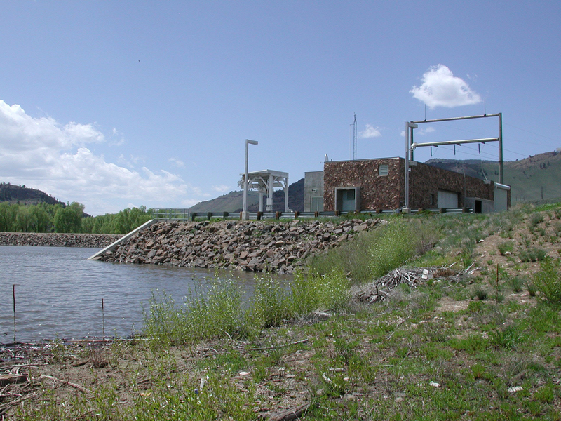

As spring ushers in warmer temperatures, it’s time to bring irrigation systems back online. However,
turning water on isn’t enough as it’s crucial to ensure your syste...
Northern Water Increases C-BT Quota to 70 Percent
The Northern Water Board of Directors voted Thursday to increase its 2025 quota allocation for
Colorado-Big Thompson Project water to 70 percent.
Conservation Gardens in Berthoud Add Features
The Water Efficiency team has added five new demonstrations to the Conservation Gardens to inspire
both commercial and residential garden installations.
Conservation Gardens in Berthoud Add Features
The Water Efficiency team has added five new demonstrations to the Conservation Gardens to inspire
both commercial and residential garden installations.
Key Projects Making a Difference.
Northern Water is leading the way with cutting-edge projects that ensure a sustainable, reliable water
supply for Colorado's future.
Colorado-Big Thompson Project
One of the largest water delivery systems in Colorado, supporting agriculture, municipalities, and
wildlife.
200,000 acre-feet of water delivered annually
Serves 1 million people
Waters 615,000 acres of farmland

Windy Gap Project
Transferring water from the Colorado River to support Front Range communities.
Diverts 1.7 million acre-feet of water annually
Provides water to over 200,000 residents
Facilitates water delivery to several major cities
Northern Integrated Supply Project
Enhancing water availability with two new reservoirs for growing communities.
40,000 acre-feet of water annually
Serves 15 communities
New 170,000-acre-foot reservoir
Northern Integrated Supply Project
Enhancing water availability with two new reservoirs for growing communities.